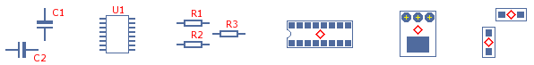

Welcome to gedasymbols.org. This website is a repository for symbols, footprints and documentation that are useful to anyone using the GPL schematic creation program gschem or the GPL pcb layout program PCB. The misson of gedasymbols.org is to increase the usage of the gEDA suite of tools by distributing symbols and footprints for these programs.
Please note that this site is undergoing transition (as of Feb 2006 at least) so please bear with us while we get our act together. Meanwhile, here are some links to relevent information:
| Contributors |
|---|
|
|
Ok, so the name of the site is "gedasymbols", so where's the symbols? Well, you could browse the official libraries listed below, or use the search engine, or you can visit the list of contributors (also in the right-hand sidebar) to see what they've uploaded. Each contributor can upload symbols, footprints, tools, and/or documentation.
There are many ways to contribute to gedasymbols.org. First off, letting us know of any problems with the site, or ideas to make it more useful, are always appreciated. You can also contact one of the people already contributing here and ask them if they want help with symbols or footprints. Also, you can ask for a CVS account so that you can create your own area here which would let you upload and manage your own symbols and footprints.